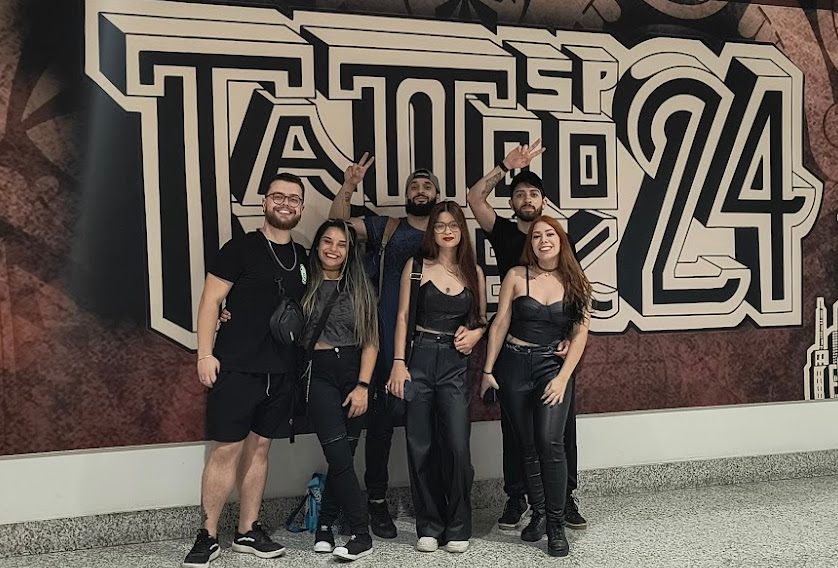
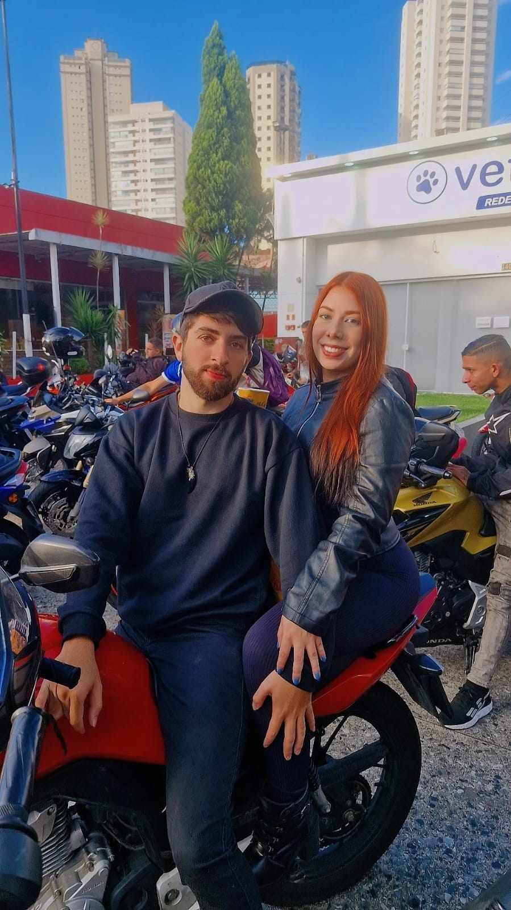
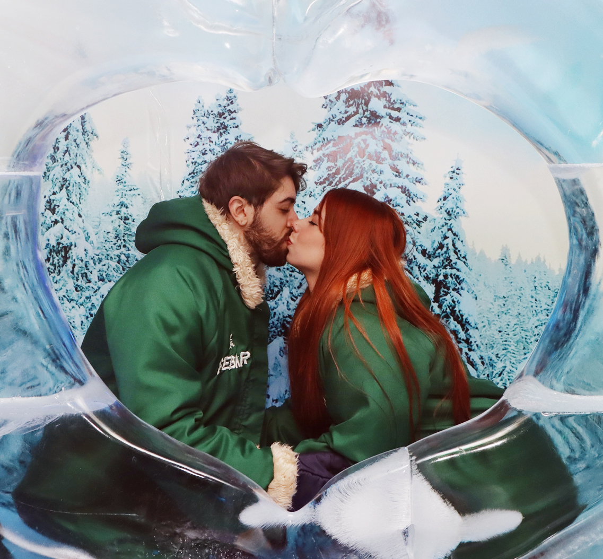
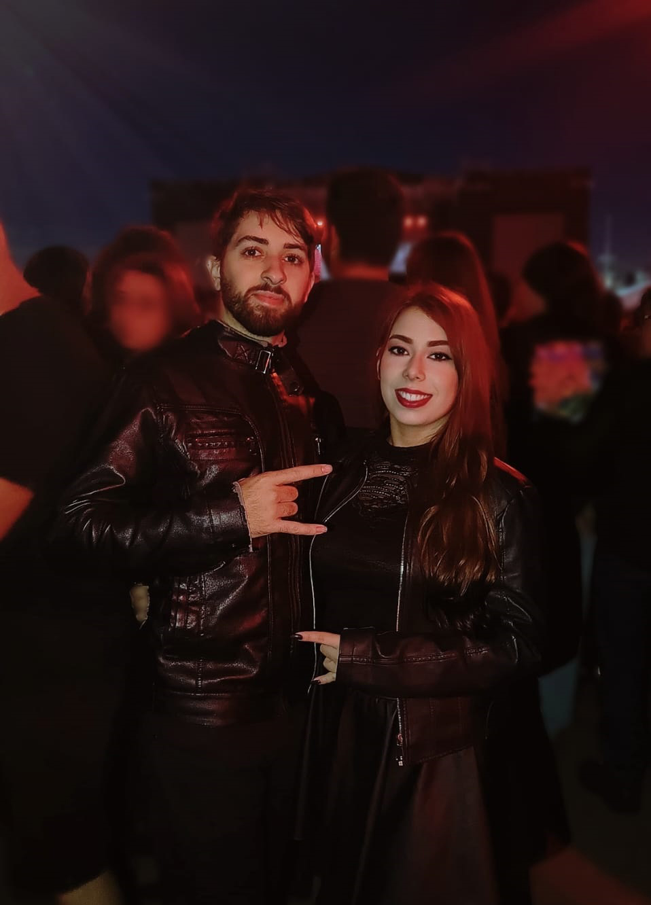
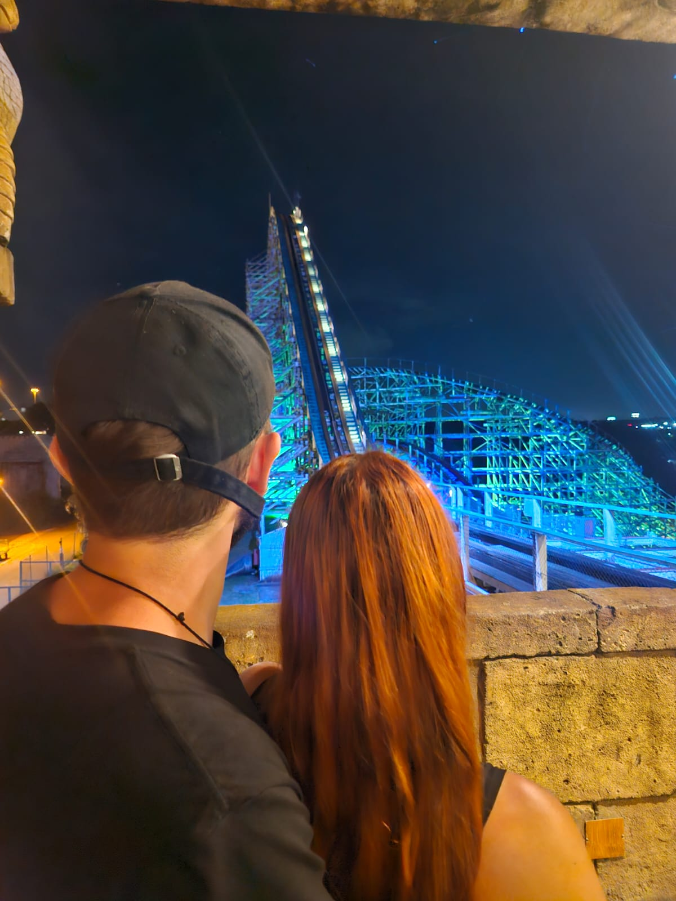
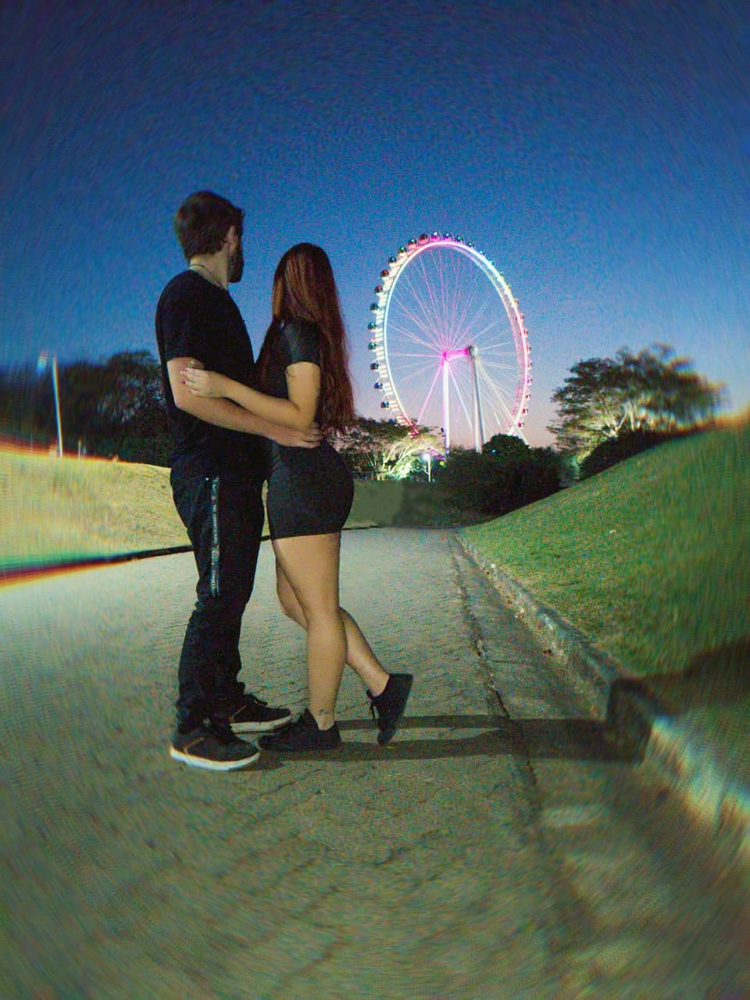
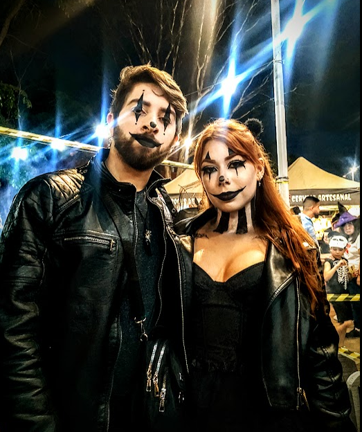
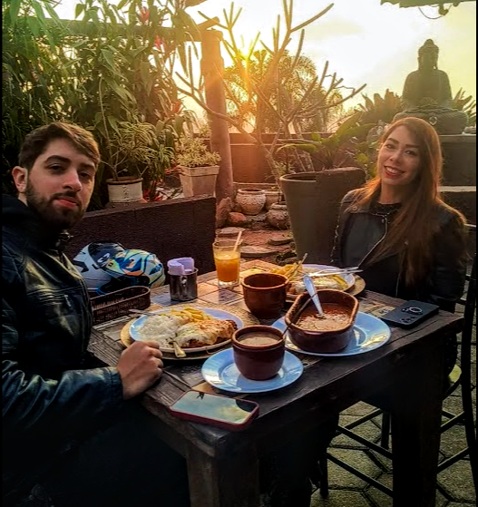
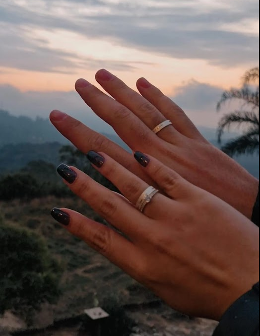

Nossa História
13/02/2024 — Começou tudo
O dia que nossos caminhos realmente se cruzaram.

30/05/2024 — Você me deu um fora
Criei coragem pra te chamar pra sair e tomei um não seco.

17/11/2024 — O destino decidiu nos reunir
Neste dia me despertou um desejo de te querer na minha vida.

Desde então decidimos construir histórias
Passamos a dormir juntos mesmo longe.

Entramos juntos no foco de treinar
Às vezes falhamos, mas nunca desistimos.

Saímos e viajamos para diversos lugares
Viver essas experiências ao seu lado foi incrível.








07/09/2025 — Decidimos oficializar nosso relacionamento


